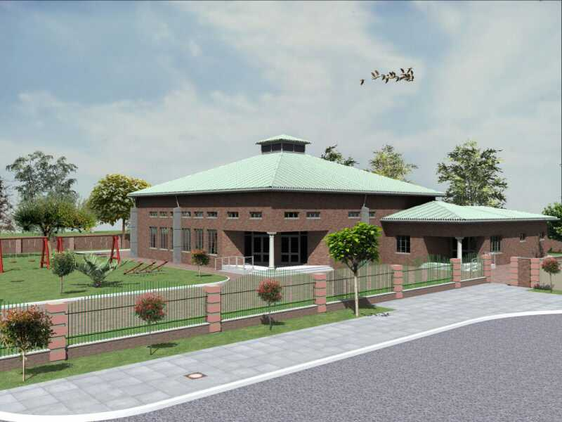

Portfolio
Projects that tell the story.
Selected work drawn from the company portfolio, presented as project case studies across education, healthcare, community and residential development.
EducationHealthcareCommunityResidentialMasterplanning

Education
Lichtenburg Secondary School 2018
View case study →

Community
Lethabong Community Library
View case study →

Community
SDA Church 2016
View case study →

Healthcare
Weltervrede Clinic
View case study →

Healthcare
Makaunyane Clinic
View case study →

Residential
Student Accommodation
View case study →

Education
Kgetleng Primary School
View case study →

Education
Proposed Secondary School
View case study →